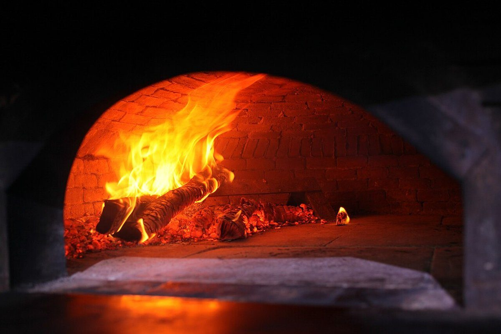
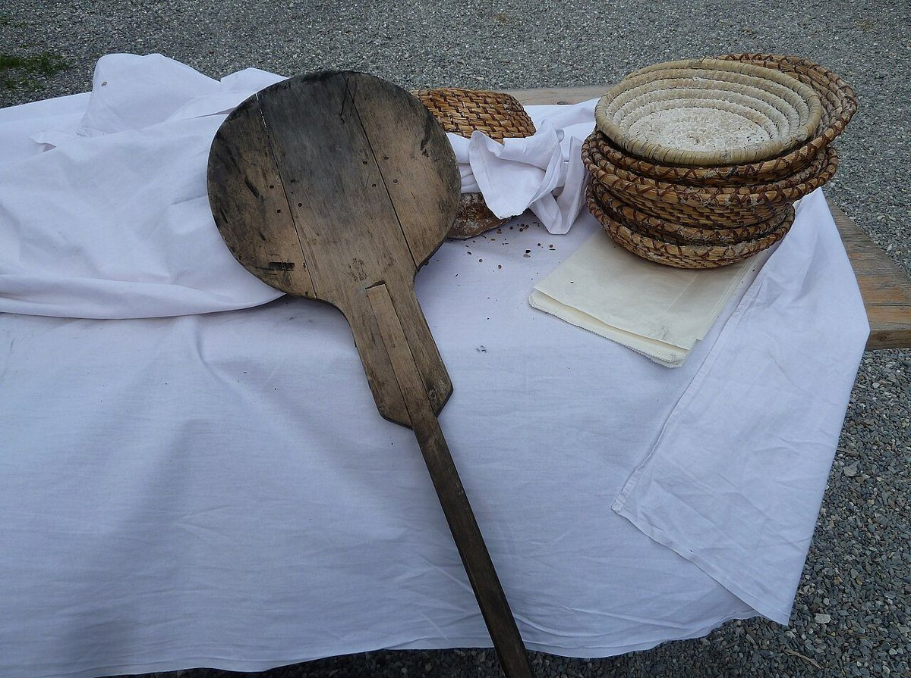
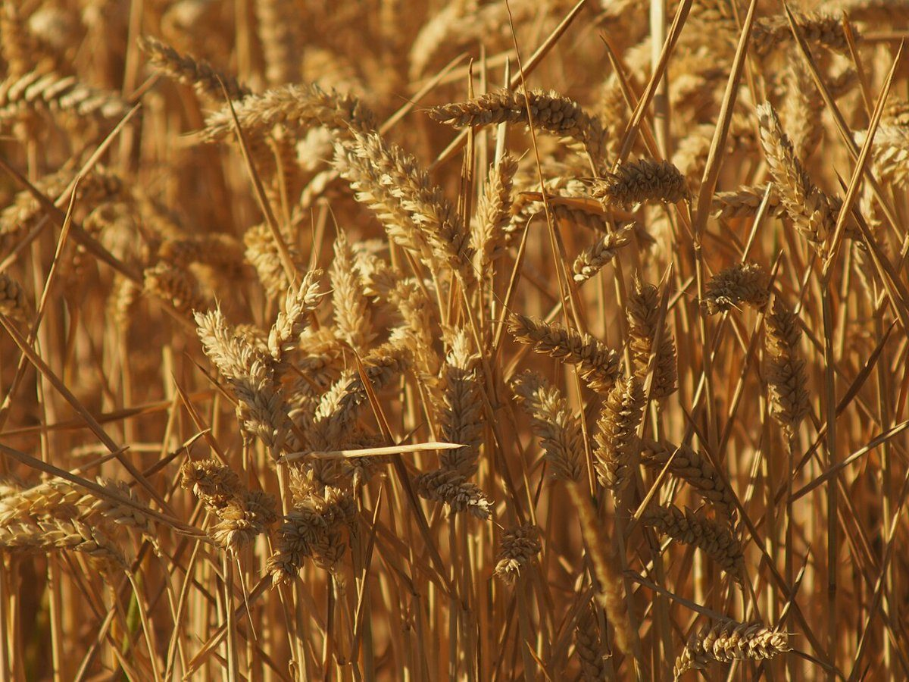

パン屋 / 岐阜県高山市
慣れないラブソング
岐阜県高山市丹生川町にあるパン屋「慣れないラブソング」のご案内ページです。営業時間やメニューなど、詳しいことは準備中。お問い合わせはお電話(0577-70-8884)かInstagramから。
制作側の連想
歌詞が色づいていくように
お店の由来は分かりません。制作側は「ラブソング」という言葉から、カラオケの歌詞テロップが歌い出しに合わせて白から色へ染まっていく画面を連想しました。そこでこのサイトは、見出しが左から色づく作りにしています。制作側の連想で、お店の理念・由来とはまったく関係がありません。
パンの景色(イメージ)
字幕つきの六枚
写真は国外または撮影地不明のフリー素材で、お店の商品ではありません。字幕のような帯は制作側が付けたキャプションです。




間奏
麦と粉と火



ご案内
確認できたことだけ
| 店名 | 慣れないラブソング |
|---|---|
| 業種 | パン屋 |
| 所在地 | 〒506-2123 岐阜県高山市丹生川町町方38-1 |
| 電話 | 0577-70-8884 |
| 営業時間 | 準備中 |
| 定休日 | 準備中 |
| ご予約 | 準備中 |
| 駐車場 | 準備中 |
| SNS | Instagram @narenailovesong |